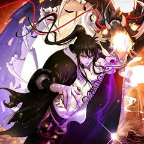
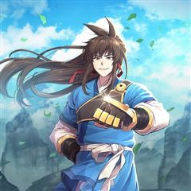
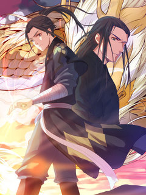
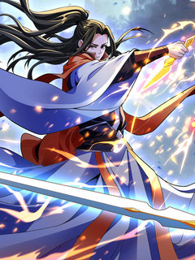

화타가 된 외과의사 같은 웹툰 추천

화타가 된 외과의사 · 샤이멜 / 최병익 / 박동신
화타가 된 외과의사 재밌게 봤다면 이 웹툰들도 좋아할 거예요. 같은 장르이면서 눈물샘자극, 환생 같은 요소가 겹치는 작품을, 겹치는 요소가 많은 순서로 20개 골랐어요.
2026-10-10 기준 · 네이버웹툰·카카오웹툰·레진코믹스 · 성인 작품 제외
내 취향으로 직접 골라 추천받기 →-
1
 카카오웹툰
카카오웹툰대사형 선유
삼류 낭인 곽노의 손에 거둬진 아이들. 사제관계를 맺고 아이들은 어설프게나마 무공과 보법 수련을 하며 각자의 꿈을 꾼다. 먹고살기 위해 곽노는 늘 자리를 비워야 했고, 아이들 중 맏이인 선유는 사제들을 돌봐야 한다. 그는 대사형大師兄이다.
눈물샘자극액션카카오웹툰에서 보기 → · 대사형 선유 같은 웹툰 → -
2
 카카오웹툰
카카오웹툰은해상단 막내아들
『은해상단 막내아들』 천하제일의 상재(商才)를 타고난 은서호. “어째서 무림맹이 나를…….” “맹의 윗분들께서 자네가 거슬린다고 하더군. 쯧, 그놈의 돈이 뭐라고.” 백도 무림을 자처하던 무림맹의 칼에 살해당한 나는 상단 일을 처음 배우던 날로 돌아…
눈물샘자극액션카카오웹툰에서 보기 → -
3
 카카오웹툰
카카오웹툰룬의 아이들
소년이여, 반드시 살아남아라! 삼촌에게 가문이 멸망당한 후 소년 보리스에게 남은 것은 가문의 검 “윈터러” 뿐이었다. 하지만 그 보물이 또 다른 위기의 원인이 될 줄이야. 사람들이 “윈터러”를 노릴 때 마다 보리스의 마음은 점점 더 겨울처럼 차갑고…
눈물샘자극액션카카오웹툰에서 보기 → -
4
 카카오웹툰
카카오웹툰암천제
세상으로부터 버림받은 아이. 어둠으로 던져진 아이. 사람의 살이 찢기고 비명이 난무하는 곳에서 밥을 먹고 잠을 자던 아이. 어느 날, 산 자는 나갈 수 없는 제왕성 비옥십팔호실에서 소악귀가 사라지고, 힘이 없어 모든 걸 잃어야 했던 소악귀가 암천의…
눈물샘자극액션카카오웹툰에서 보기 → -
5
 네이버웹툰
네이버웹툰킬러경찰
조직의 배신으로 죽게 된 전설의 킬러 ‘비광’, 경찰 ‘김경수’의 몸으로 환생한 그는 자신을 배신했던 킬러조직 화국사에게 복수를 다짐한다.
환생액션네이버웹툰에서 보기 → -
6

카카오웹툰낭선기환담
호랑이로 환생하여, 영물이 되어 살아가던 산의 주인 산군. 평화롭게 살아가던 산군의 앞에 한 소녀가 찾아오게 된다. 대뜸 지아비로 모시겠다고 하는 소녀. 귀찮은 산군은 그녀를 내쫓으려고 하지만, 그녀는 돌아갈 곳이 없다. 결국 소녀를 거두기로 결심한…
환생액션카카오웹툰에서 보기 → -
7
 카카오웹툰
카카오웹툰전신의 강림
봉인되었던 신화와 전설이 다시 현실로 돌아왔다. 모든 신(神)과 용(龍)이 해방되고, 마(魔)와 귀(鬼)가 다시 들어온 세계. 인간의 각성. 영웅의 등장. 새로운 신화시대가 열렸다. 이 이야기는 새로운 신화시대를 살아가는 이 시대 영웅들의 전쟁과 사…
눈물샘자극액션카카오웹툰에서 보기 → -
8
 카카오웹툰
카카오웹툰창천무신
"이 기생오라비처럼 생긴 놈은 뭐지?" 천하제일로 군림하던 최강의 무인! 나, 독패 하후영. 나를 상대할 자는 무림 어디에도 존재하지 않는다! 더는 지상에서 이룰 성취가 없자 허무와 공허가 나를 잠식했다. 무의 끝, 극의를 이루기 위해서는 신선이 될…
환생액션카카오웹툰에서 보기 → -
9
 카카오웹툰
카카오웹툰검은머리 미군 대원수
1910년대로 회귀한 인생 2회차 김유진, 미래 지식으로 역사를 휘어잡다. 언덕을 굴러 내려오는 레토나로부터 아이를 구하려다 죽음을 맞이한 한국인 중대장. 정신을 차려 보니 미래 지식을 가진 채 1900년대 재미 조선인 김유진으로 회귀하고 말았다.…
환생액션카카오웹툰에서 보기 → -
10
 카카오웹툰
카카오웹툰환생마신전
소천마(少天魔) 연운휘(燕雲輝). 이능만으로 천마신교 소교주가 된 존재. 파란만장하던 그가 부교주와 장로들의 반란에 직면한다. [ 날 죽일 때 죽이더라도 내가 어떤 놈인지는 떠올려야 하셨소,사숙. 그러니까 다 뒈져라! ] 반란자들과 함께 장렬히 산화…
환생액션카카오웹툰에서 보기 → -
11
 카카오웹툰
카카오웹툰남궁세가 막내공자
남궁세가의 막내공자, 남궁대소! 소가주 경합에서 단전을 잃고 어이없는 죽음을 맞이해 과거로 회귀하는데... 천하제일세가의 막내 공자? 이딴 거 살아가는데 거추장스럽기만 했다. 패도 따윈 개나 줘버리라지! 머저리 같은 남궁, 무림 폐품 막내공자는 떠납…
환생액션카카오웹툰에서 보기 → -
12카카오웹툰
이 나라를 없앨 예정인데요
"환생해도 하필이면 똥도 못 싸고 머리털도 없는 대머리 해골이라니." 신들도 골치 아파하는 최악의 마왕, 해골왕. 인간으로 만들어주겠다는 신들에게 계약 사기를 당하고 봉인당해 버렸다. 분명히 그랬는데, "성자님, 일어나셨어요?” 이 따스한 온기와 말…
환생액션카카오웹툰에서 보기 → -
13

카카오웹툰격투 챔피언, 무림에 가다
"미스터 퍼펙트" 종합 격투기 계의 살아있는 전설, 챔피언 강상혁. 그가 금호장의 막내 아들로 무림에서 환생하다?! '이번엔 무림에서 새로운 전설이 되겠어!' 무공과 초식이 난무하는 무림에서 복싱, 태권도, 무에타이, 레슬링, 주짓수, 카포에라, 유…
환생액션카카오웹툰에서 보기 → -
14
 카카오웹툰
카카오웹툰창천무신2
"이 기생오라비처럼 생긴 놈은 뭐지?" 천하제일로 군림하던 최강의 무인! 나, 독패 하후영. 나를 상대할 자는 무림 어디에도 존재하지 않는다! 더는 지상에서 이룰 성취가 없자 허무와 공허가 나를 잠식했다. 무의 끝, 극의를 이루기 위해서는 신선이 될…
환생액션카카오웹툰에서 보기 → -
15

레진코믹스역천사신 [연재]
현맥으로 정해진 힘이 곧 지위인 세상에서, 소태화는 망가진 현맥으로 가문의 후광조차 받지 못한 열등감 덩어리로 자라난다. 그런 소태화는 유운성 최고 미인과의 혼삿날, 질투에 미친 소태진에게 독살당한다. 유운성과 멀리 떨어진 어느 대륙에서 갓난아기로…
환생액션레진코믹스에서 보기 → -
16

레진코믹스혼돈검신 [연재]
한때 검신으로 이름을 날렸던 검진(劍塵)은 독고구패(獨孤求敗)와의 최후 결투에서 동귀어진(同歸於盡)하였으나, 전생의 기억을 고스란히 보존한 채 다른 세계인 천원대륙(天元大陸) 속 장양(長陽) 가문의 도련님으로 환생한다. 그렇게 그는 검신으로서의 기억…
환생액션레진코믹스에서 보기 → -
17
 네이버웹툰
네이버웹툰66666년 만에 환생한 흑마법사
강대했던 흑마법사 디아블로 볼피르. 12신의 계략에 당해 억겁 속에 봉인되었지만, 그로부터 66666년이 흘러 다시금 이 땅에 강림한다! "응애!" 웰턴 백작의 갓 태어난 장남으로. 딥다크 매직 판타지 시작!
환생액션네이버웹툰에서 보기 → · 66666년 만에 환생한 흑마법사 같은 웹툰 → -
18
 네이버웹툰
네이버웹툰환생천마
철혈의 맹주, 강호의 절대자 '천하진'. 가문의 수치라 불리는 망나니 '벽리단'의 몸으로 깨어나다! 취미는 사기도박, 검은 창고에 박아둔지 오래. 하루아침에 천하제일인에서 천하의 쓰레기가 된 그는 다시 검을 잡고, 전생에서 이루지 못한 경지에 오르고…
환생액션네이버웹툰에서 보기 → -
19
 네이버웹툰
네이버웹툰권왕환생
주먹 하나로 무림을 누빈 남자 단우성. 갑작스레 마도에게 죽음을 맞이하고, 돈 많은 은하상단의 대공자의 몸에서 다시 눈을 뜨다. “나는 은원에서 자유롭길 바라지 않아. 은혜가 있으면 갚고, 원한이 있어도 갚아줘야지.” 가진 것이라고는 돈밖에 없는 대…
환생액션네이버웹툰에서 보기 → -
20
 네이버웹툰
네이버웹툰검술명가의 네크로맨서
대륙을 공포로 몰아넣었던 최강의 네크로맨서 아키몬드. 그는 영웅 베르켈 라인란트의 검에 목숨을 잃는다. 그리고 200년 후, 어느 가문의 아기로 태어나 첫 마디를 뱉는다. “어둠의 문지기와 하수인 그리고 병사들이여, 내 명을 받들라!“
환생액션네이버웹툰에서 보기 →